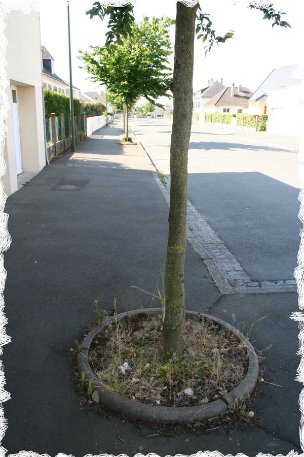
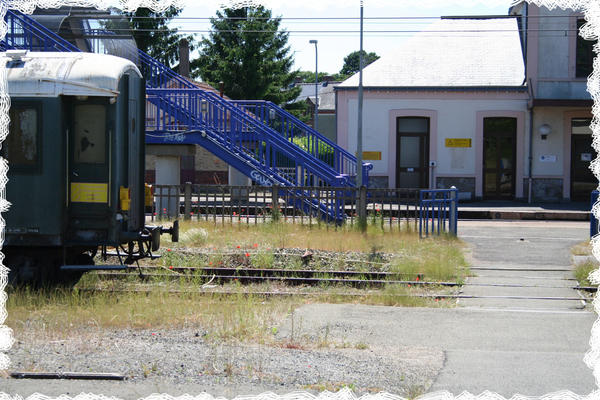

Les villes sont devenues des espaces maitrisés ne laissant que peu de place à la spontanéité. Cependant, quelques lieux échappent encore à la maitrise humaine : les délaissés.
 D’un autre coté, les citadins souhaitent de plus en plus renouer avec la nature et voir du « vert » investir la ville : 7 français sur 10 pensent que le végétal n’est pas assez présent en ville selon une enquête UNEP-IPSOS 2010.
Pour améliorer votre cadre de vie et augmenter la biodiversité, nous vous proposons de semer et planter vous-même la ville de demain. Que ce soit sur l’espace public ou votre balcon, la nature a sa place en ville et c’est vous qui allez la végétaliser!
Notre projet consiste en un ensemenseur permettant à chacun de végétaliser la ville dans un esprit « libre service » de mise à disposition de graines. Cet ensemenseur se clipse sur les poteaux d’arrêts de bus par exemple, symbole des lieux en commun et du transport, donc de la dissémination des graines.
Quoi de mieux que de retrouver tous les jours une ambiance colorée et vivante dans les rues de nos quartiers, de nos lieux de travail.
Souffler du vert sur la ville est l’occasion de rencontrer ses voisins et de parler du quartier !
Parce qu’on a parfois oublié comment marche la nature : tout simplement ! Alors pourquoi ne pas l’observer jour après jour…. voir se succéder les coquelicots, les bleuets puis les soucis et aromatiser nos plats avec les herbes du balcon, et déguster en apéro nos tomates-cerises !
Le milieu urbain est un espace riche en écosystèmes variés, d’où une biodiversité importante. La présence de plantes locales aidera la faune à se cacher.
La gestion différenciée des espaces verts (La gestion différenciée est un outil qui permet de gérer de façon plus écologique les espaces verts d’une ville.) est appelée à s’étendre, il est important de s’habituer à des espaces plus naturels, moins entretenus… et tant mieux si cela vient des habitants !.